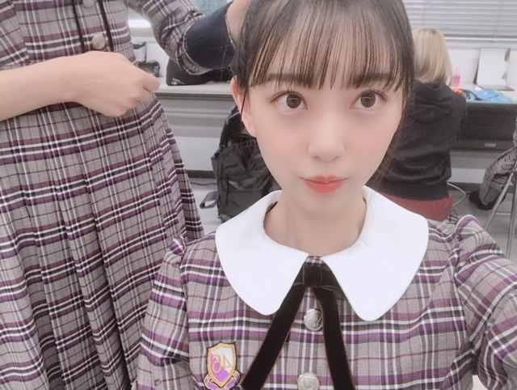
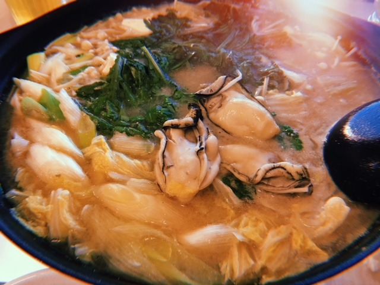
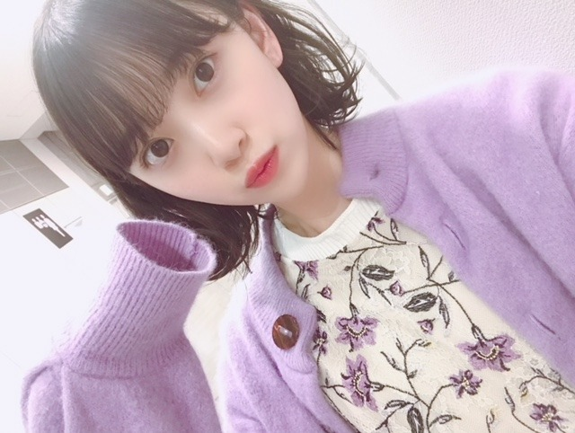
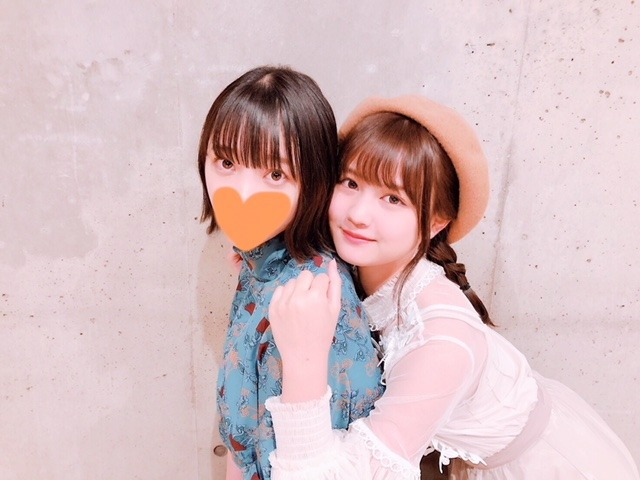

2018/1105Monマフラーまみれ
おうちで、猟奇的な彼女を観ました！
飛鳥の、あの頃きみを追いかけた
もやっと観れました〜☺︎
飛鳥、終始可愛かったし
なんか素で笑ってるのかなって思う
シーンが何回かあって
飛鳥〜〜〜って心の中で叫んでました笑
映画の撮影頑張ってたもんね
お疲れ様！

いたずらしてくるこの子は誰だ！☺︎
最近は、牡蠣鍋を食べました

鍋がだいすきなので
いろんなレパートリーの鍋を
作れるようになりたいなぁ
冬といえば、鍋ですね！
定期的に観たくなる映画 ドラマ
ぼくは明日昨日のきみとデートする
渇き。
海街diary
魔女の宅急便
ヘイフラワーとキルトシュー
バイオハザードシリーズ
失恋ショコラティエ
逃げるは恥だが役に立つ
パパとムスメの7日間
みなさんはありますかー？

今週の金曜日はMUSICSTATIONに
出させていただきます☺︎
みてください

かわいいれの☺︎
今度ゆっくりお話ししようね〜
では！
2018/11/05 21:00
コメント(448)
今日もお疲れ様‼
早く映画みたいーー！
早く映画みたいーー！
僕明日俺が初めて泣いた映画！いいよね！
あと君の膵臓をたべたいも好きだよ！
あと君の膵臓をたべたいも好きだよ！
堀ちゃん、ブログ更新ありがとう。
この季節の鍋は美味しいよね。
私がよく見る映画はホビットやロードオブザリングとかかな。
また、今週のＭステ楽しみにしてるね。
この季節の鍋は美味しいよね。
私がよく見る映画はホビットやロードオブザリングとかかな。
また、今週のＭステ楽しみにしてるね。
牡蠣鍋最高ですね～！
温かいものが食べたくなる季節ですね～！
定期的に観たくなるのは、
そんなバカなのMVかな？(笑)
あと、乃木の東京ドームライブ～！！
私、起きるも見たいんだけれども、どこへ保管所してしまったか思いだせないのです
れのちゃん～！
かわいい～～～！
ほりちゃん～！
かわいいぃ！！！
最後の写真、どこかで見たことがあるような・・
ほりちゃんだから既視感が半端ないのかな？(笑)
６年近く見てるから・・・(笑)
温かいものが食べたくなる季節ですね～！
定期的に観たくなるのは、
そんなバカなのMVかな？(笑)
あと、乃木の東京ドームライブ～！！
私、起きるも見たいんだけれども、どこへ保管所してしまったか思いだせないのです
れのちゃん～！
かわいい～～～！
ほりちゃん～！
かわいいぃ！！！
最後の写真、どこかで見たことがあるような・・
ほりちゃんだから既視感が半端ないのかな？(笑)
６年近く見てるから・・・(笑)
ランナウェイとラッキーセブン見て！
新制服未央奈にめちゃくちゃにあってる！！
俺は花男とかイケパラとか野ブタとかが懐かしい
俺は花男とかイケパラとか野ブタとかが懐かしい
これが巷で噂の飯テロというものでしょうか
夕食から数時間が過ぎ、小腹が空いたこの時
にタイミング良すぎます。
鍋にはちくわぶ入ってるのかな。
新制服可愛いね。
乃木坂ちゃんみんなに言えるけど、細い首に
白い襟が良く似合います。
みおなちゃんは映画やドラマを見返す派なん
ですね。僕はほとんど見返さないけど、どん
なきもちで、みおなちゃんは見返してるの？
映画の中に自分がいるようなのでしょうか、
役者の演技に注目してるのでしょうか、もし
かしてプロデューサー視点？
１０代から２０代にかけて、可愛く綺麗に
なってゆくみおなちゃんを乃木坂で見られて
幸せです。
夕食から数時間が過ぎ、小腹が空いたこの時
にタイミング良すぎます。
鍋にはちくわぶ入ってるのかな。
新制服可愛いね。
乃木坂ちゃんみんなに言えるけど、細い首に
白い襟が良く似合います。
みおなちゃんは映画やドラマを見返す派なん
ですね。僕はほとんど見返さないけど、どん
なきもちで、みおなちゃんは見返してるの？
映画の中に自分がいるようなのでしょうか、
役者の演技に注目してるのでしょうか、もし
かしてプロデューサー視点？
１０代から２０代にかけて、可愛く綺麗に
なってゆくみおなちゃんを乃木坂で見られて
幸せです。
帰り道は遠回りしたくなるのパフォーマンス楽しみです！
2列目の真ん中やし見つけやすいしありがたい！
なーちゃんを後ろから支えてください！！
堀ちゃんの髪型最近かわいい！
2列目の真ん中やし見つけやすいしありがたい！
なーちゃんを後ろから支えてください！！
堀ちゃんの髪型最近かわいい！
堀ちゃん大好き！
Mステ楽しみにしてるよー
Mステ楽しみにしてるよー
バイオハザードはゲームでハマりまくって映画も全部観ました。
こんばんは
もうすっかりお鍋が合う季節になってきたね、自分もこの前牡蠣鍋食べたよ～めっちゃ美味しいよね、鍋は汁を飲む瞬間がたまらない
よく見る映画は
007トゥモロー・ネバー・ダイ
007カジノロワイヤル
ミッション:インポッシブル/ゴースト・プロトコル
キングスマン
かな！スパイ映画ばっかりや もし観たこと無かったら是非見てね
もし観たこと無かったら是非見てね
もうすっかりお鍋が合う季節になってきたね、自分もこの前牡蠣鍋食べたよ～めっちゃ美味しいよね、鍋は汁を飲む瞬間がたまらない
よく見る映画は
007トゥモロー・ネバー・ダイ
007カジノロワイヤル
ミッション:インポッシブル/ゴースト・プロトコル
キングスマン
かな！スパイ映画ばっかりや
この袖丈はれなち！
未央奈ちゃんブログ更新ありがとうございます。
私も飛鳥ちゃんの映画見ました‼
すっごくかわいかったし、感動しました‼
未央奈ちゃんの映画も楽しみにしています。
今週のＭステ、新曲の初披露楽しみに待っています‼
大好きです‼応援しています‼
私も飛鳥ちゃんの映画見ました‼
すっごくかわいかったし、感動しました‼
未央奈ちゃんの映画も楽しみにしています。
今週のＭステ、新曲の初披露楽しみに待っています‼
大好きです‼応援しています‼
こんばんは。
いたずらは、山崎さんかな？
牡蠣鍋美味しそうです。
冬は鍋が楽しみですね。
自分は実家でよく水炊き食べてました。
素材の旨味が出て、美味しいですよね。
今は、ちゃんこ鍋か豆乳鍋が多いかな。
コンビニでも買えるし。
映画・ドラマは、
4月は君の嘘
麒麟の翼
ジブリ作品
ダヴィンチコード
アンナチュラル最終回
逃げるは恥だが役に立つ
他
MUSICSTATION楽しみです。
体調崩してませんか？
頑張って行きましょう！
いたずらは、山崎さんかな？
牡蠣鍋美味しそうです。
冬は鍋が楽しみですね。
自分は実家でよく水炊き食べてました。
素材の旨味が出て、美味しいですよね。
今は、ちゃんこ鍋か豆乳鍋が多いかな。
コンビニでも買えるし。
映画・ドラマは、
4月は君の嘘
麒麟の翼
ジブリ作品
ダヴィンチコード
アンナチュラル最終回
逃げるは恥だが役に立つ
他
MUSICSTATION楽しみです。
体調崩してませんか？
頑張って行きましょう！
未央奈、ブログ更新ありがとう！
牡蠣鍋！美味しそう〜
温かい鍋が美味しい季節になってきましたね。
体調に気をつけてくださいね。
Mステ、楽しみにしてます！
またの更新待ってます〜
牡蠣鍋！美味しそう〜
温かい鍋が美味しい季節になってきましたね。
体調に気をつけてくださいね。
Mステ、楽しみにしてます！
またの更新待ってます〜
ブログ更新ありがと！
未央奈ちゃんこんばんは！
鍋、いいなぁ。
ちゃんこ鍋食べたいな(笑)
定期的に見る映画、ドラマ！
相棒、となりのトトロ、孤独のグルメ辺りです。
では(@^^)
鍋、いいなぁ。
ちゃんこ鍋食べたいな(笑)
定期的に見る映画、ドラマ！
相棒、となりのトトロ、孤独のグルメ辺りです。
では(@^^)
ブログ更新ありがとーーー！！！
未央奈の私服オシャレだねーーー！！
今度握手会行くから待っててねーーー！！
未央奈の私服オシャレだねーーー！！
今度握手会行くから待っててねーーー！！
ほのぼのとさせていただきました。←マフラーまみれの感想
みお＼(^o^)／お疲れ様でした
写真ありがとう＼(^o^)／
萌え袖可愛いな
れのもめちゃ可愛い(*´ω｀*)
これからも頑張って(/･ω･)/
映画見れて良かったね
写真ありがとう＼(^o^)／
萌え袖可愛いな
れのもめちゃ可愛い(*´ω｀*)
これからも頑張って(/･ω･)/
映画見れて良かったね
みおなちゃん更新ありがとう！
私も鍋大好き〜 夏でも食べるよ〜
Mステリアタイでみます！
録画して再度みます！！
みおなちゃんが紹介してる映画とかドラマついついみたくなっちゃうんだよね〜
受験が終わったらゆっくりみます！
いつもありがとう❤︎
私も鍋大好き〜 夏でも食べるよ〜
Mステリアタイでみます！
録画して再度みます！！
みおなちゃんが紹介してる映画とかドラマついついみたくなっちゃうんだよね〜
受験が終わったらゆっくりみます！
いつもありがとう❤︎
堀ちゃん、美人さんだね‼️(／^^)／
可愛い❤️ 絶対見るよ〜
未央奈ブログ更新ありがとう！
飛鳥の映画見れたんだね！！
飛鳥にぴったりの役だったよね！
いたずらしてきてるのは、、誰や？
みりあかなー？
俺あんまりドラマ見ないから
未央奈のオススメのドラマを見てみるね！
それじゃ、お互いがんばりましょう！
飛鳥の映画見れたんだね！！
飛鳥にぴったりの役だったよね！
いたずらしてきてるのは、、誰や？
みりあかなー？
俺あんまりドラマ見ないから
未央奈のオススメのドラマを見てみるね！
それじゃ、お互いがんばりましょう！
あ、わかった
れなちやれなち
れなちやれなち
未央奈ちゃんブログ更新ありがとう!!
もうお鍋の時期ですか!?
時がすぎるのは早いですよね！w
自分も最近ドラマ見るのにはまってます！w
サスペンスか恋愛ものでオススメがあれば知りたいです！！
Mステ楽しみにしてます！！！
お仕事大変だと思いますが、頑張ってください！
大好きです！！
応援しています！！！
もうお鍋の時期ですか!?
時がすぎるのは早いですよね！w
自分も最近ドラマ見るのにはまってます！w
サスペンスか恋愛ものでオススメがあれば知りたいです！！
Mステ楽しみにしてます！！！
お仕事大変だと思いますが、頑張ってください！
大好きです！！
応援しています！！！
牡蠣鍋めっちゃ美味しそう！！
いたずらはみりあちゃんかなー？
いたずらはみりあちゃんかなー？
みおな、こんばんは。
見たくなる映画は、いくつかありますね。
大好きなオードリーの『ローマの休日』。これは何度見ても飽きない。ストーリーも下手をすれば台詞まで覚えているよ。
『インペデンスデイ』。全人類が協力して、エイリアンに挑むところが素晴らしい。大統領がとにかくかっこいい。今の大統領もまねして欲しいね。
まだ、いっぱいありすぎて書ききれません。
一緒に映画見たいな。
見たくなる映画は、いくつかありますね。
大好きなオードリーの『ローマの休日』。これは何度見ても飽きない。ストーリーも下手をすれば台詞まで覚えているよ。
『インペデンスデイ』。全人類が協力して、エイリアンに挑むところが素晴らしい。大統領がとにかくかっこいい。今の大統領もまねして欲しいね。
まだ、いっぱいありすぎて書ききれません。
一緒に映画見たいな。
更新ありがとうー！
失恋ショコラティエはよく見返す！
失恋ショコラティエはよく見返す！
近くに映画館があるってイイね(ﾟ∀ﾟ)
未央奈もパパとムスメの七日間好きなんだ！
俺も超好きで3回以上は見ました
舘ひろしさん好き
君追いもすごくよかったです〜
普段の飛鳥ちゃんの感じが出てるけどちゃんと役にも入っててね〜
途中から主人公の男の人に感情移入してました
俺も超好きで3回以上は見ました
舘ひろしさん好き
君追いもすごくよかったです〜
普段の飛鳥ちゃんの感じが出てるけどちゃんと役にも入っててね〜
途中から主人公の男の人に感情移入してました
ブログありがとう
何度見ても飽きないドラマは…
「SP」 「Crysis」かな
2作品とも同じ監督さんなんだけど大好き！
激しいアクション・緊迫したストーリー、所々にある
笑い、そして人間の汚さや信念…
色々な要素が詰まったドラマで好きです！
ちなみに「SP」はドラマ＋2部作の映画で完結します。
時間があったら是非見てほしいです！
「SP」の真木よう子さんかっこいいです
何度見ても飽きないドラマは…
「SP」 「Crysis」かな
2作品とも同じ監督さんなんだけど大好き！
激しいアクション・緊迫したストーリー、所々にある
笑い、そして人間の汚さや信念…
色々な要素が詰まったドラマで好きです！
ちなみに「SP」はドラマ＋2部作の映画で完結します。
時間があったら是非見てほしいです！
「SP」の真木よう子さんかっこいいです
お疲れ様です。
猟奇的な彼女と来たら次は「僕の彼女を紹介します」を観てね。
猟奇的な彼女と来たら次は「僕の彼女を紹介します」を観てね。
未央奈ブログ更新ありがとう！
映画見たいなーーー、
ホットギミックが自分の中では1番見たい映画ですw
たのしみに待ってます
最近自分は偏差値上がってきました
受験勉強頑張ります
未央奈もお仕事頑張ってください
映画見たいなーーー、
ホットギミックが自分の中では1番見たい映画ですw
たのしみに待ってます
最近自分は偏差値上がってきました
受験勉強頑張ります
未央奈もお仕事頑張ってください
未央奈ブログ更新ありがとう！
タイトルのタオルまみれで、秘密のケンミンshowのえびまみれを思い出したよ笑笑
今日も未央奈はかわいいな～
牡蠣鍋美味しそう～！
体調に気を付けてね！
大好きだよ！！！
タイトルのタオルまみれで、秘密のケンミンshowのえびまみれを思い出したよ笑笑
今日も未央奈はかわいいな～
牡蠣鍋美味しそう～！
体調に気を付けてね！
大好きだよ！！！
ブログこーしんありがとござます!!
やっと見れたんですね～!
僕はまだ見れてません笑
Mステもう２日くらい前から録画してました!!
相変わらず可愛いですね
では!!

やっと見れたんですね～!
僕はまだ見れてません
Mステもう２日くらい前から録画してました!!
相変わらず可愛いですね
では!!
ブログ更新ありがとう
初めて帰り道は遠回りしたくなる放送だね
レコメンでコメント読まれてないから読んで
明後日のレコメン楽しみにしてます！
初めて帰り道は遠回りしたくなる放送だね
レコメンでコメント読まれてないから読んで
明後日のレコメン楽しみにしてます！
未央奈！(*´꒳`*)
マフラーまみれの季節が近づいて来たね！^ ^
未央奈は映画大好きだね〜、飛鳥の映画、実際よく知っている人がスクリーンに映っているのを見るってどんな感覚なのだろう？？楽しさアップする？？逆に本編と違うところに集中したりしちゃう事もあるのだろうか？？
飛鳥も勿論だけど、未央奈も撮影改めてお疲れ様だよ！！^ ^
イタズラと言えばみり愛と言いたいところだけど、今回は違いそうだねー。んー。えー？全然わからないです〜⊂((・x・))⊃ 二期生？？んー。。ギブアップです。
わー！牡蠣鍋ですか！！(*´꒳`*)美味しそうです！牡蠣鍋自体美味しそうだけど、色合いや煮込まれ具合、黒の食器とマッチもしてて、更に写真が綺麗でめっっちゃ美味しそうです♬
鍋のレパートリーですか〜いいですね♬あー、未央奈が作ってくれたご飯とか食べられたらどんなに幸せになれるのだろ〜(*´-`)一緒におうちでお鍋とか、もうちょっと想像するだけで超絶幸せな気持ちになれます〜♬
んー。(*´-`)私は未央奈におすすめ映画を教えてもらってそれを見るんだ〜♬だからこちらから紹介出来るものはあまりないのです。ごめんねー ♂️でもジブリは定期的に見たくなります♬今の気分なら…ハウルの動く城か天空の城ラピュタ、風の谷のナウシカを久しぶりに見たい気分です。
ミュージックステーション出演頑張ってね！^ ^ 未央奈はもう何度も出ているけど、ほんと改めて凄いよねー。未央奈はとてもキラキラしています！眩しくて憧れです！！(*´꒳`*)
わぁ〜(*´꒳`*)バッチリメイクの未央奈はもちろん綺麗で可愛いくて大好きだけど、ゆったりしている時の未央奈もやっぱり大好きー！！！！もー全部可愛いけど、改めて私は未央奈のぱっちりおめめがたまらなく大好きです〜この目でずーっと見つめられたいです〜♬
では未央奈おやすみ！
755で話題に出してくれた事もハイパーウルトラファンタスティック嬉しすぎてやばいですが、未央奈の方がフクロウに嫉妬して見せてくれた事には正直嬉しくさも凄いですが、同時に感心と言いますか、未央奈って凄い子だなって心底思いました！！
なぜ感心したのかはここに詳しくは書きませんが未央奈は分かっているよね？いや、ほんとに凄いよ未央奈。(*´ω｀*) ほんとにレスありがとうございます！！本当に本っ当に嬉しかったよ！！
マフラーまみれの季節が近づいて来たね！^ ^
未央奈は映画大好きだね〜、飛鳥の映画、実際よく知っている人がスクリーンに映っているのを見るってどんな感覚なのだろう？？楽しさアップする？？逆に本編と違うところに集中したりしちゃう事もあるのだろうか？？
飛鳥も勿論だけど、未央奈も撮影改めてお疲れ様だよ！！^ ^
イタズラと言えばみり愛と言いたいところだけど、今回は違いそうだねー。んー。えー？全然わからないです〜⊂((・x・))⊃ 二期生？？んー。。ギブアップです。
わー！牡蠣鍋ですか！！(*´꒳`*)美味しそうです！牡蠣鍋自体美味しそうだけど、色合いや煮込まれ具合、黒の食器とマッチもしてて、更に写真が綺麗でめっっちゃ美味しそうです♬
鍋のレパートリーですか〜いいですね♬あー、未央奈が作ってくれたご飯とか食べられたらどんなに幸せになれるのだろ〜(*´-`)一緒におうちでお鍋とか、もうちょっと想像するだけで超絶幸せな気持ちになれます〜♬
んー。(*´-`)私は未央奈におすすめ映画を教えてもらってそれを見るんだ〜♬だからこちらから紹介出来るものはあまりないのです。ごめんねー ♂️でもジブリは定期的に見たくなります♬今の気分なら…ハウルの動く城か天空の城ラピュタ、風の谷のナウシカを久しぶりに見たい気分です。
ミュージックステーション出演頑張ってね！^ ^ 未央奈はもう何度も出ているけど、ほんと改めて凄いよねー。未央奈はとてもキラキラしています！眩しくて憧れです！！(*´꒳`*)
わぁ〜(*´꒳`*)バッチリメイクの未央奈はもちろん綺麗で可愛いくて大好きだけど、ゆったりしている時の未央奈もやっぱり大好きー！！！！もー全部可愛いけど、改めて私は未央奈のぱっちりおめめがたまらなく大好きです〜この目でずーっと見つめられたいです〜♬
では未央奈おやすみ！
755で話題に出してくれた事もハイパーウルトラファンタスティック嬉しすぎてやばいですが、未央奈の方がフクロウに嫉妬して見せてくれた事には正直嬉しくさも凄いですが、同時に感心と言いますか、未央奈って凄い子だなって心底思いました！！
なぜ感心したのかはここに詳しくは書きませんが未央奈は分かっているよね？いや、ほんとに凄いよ未央奈。(*´ω｀*) ほんとにレスありがとうございます！！本当に本っ当に嬉しかったよ！！
未央奈ちゃんブログ更新ありがとう(*^^*)
今週Mステ出演楽しみにしてるね
ドラマ下町ロケット面白いよ(o^^o)
未央奈ちゃん可愛い
斉藤貴巳
今週Mステ出演楽しみにしてるね
ドラマ下町ロケット面白いよ(o^^o)
未央奈ちゃん可愛い
斉藤貴巳
コメント失礼します！
イタズラしてるのは蘭世かな？？笑
牡蠣鍋羨ましいです（＾ν＾）絶対美味しいやつですね笑
僕は逃げ恥が定期的に見たくなります！！
金曜日のMステ楽しみにしてます^o^
ブログ更新ありがとう
イタズラしてるのは蘭世かな？？笑
牡蠣鍋羨ましいです（＾ν＾）絶対美味しいやつですね笑
僕は逃げ恥が定期的に見たくなります！！
金曜日のMステ楽しみにしてます^o^
ブログ更新ありがとう
ほんとに可愛いですね。これからも応援させていただきます！
鍋のおいしい季節になりますね。
栄養つけてねー！
栄養つけてねー！
未央奈かわいいー！
絶対にMステ見ます！
絶対にMステ見ます！
お疲れ様です(^o^)
飛鳥が出演した映画、観たんですね。
相当呼びたかったようで(笑)
ドラマですか...失恋ショコラティエもう一回みたいですな...
今週のMステ、みますからね(^^)
飛鳥が出演した映画、観たんですね。
相当呼びたかったようで(笑)
ドラマですか...失恋ショコラティエもう一回みたいですな...
今週のMステ、みますからね(^^)
僕明日は通ってる大学で撮影されたやつだしパパとムスメの7日間はわかり手すぎる( ^-^)⊃⌒♡ドラマはNのためにとかごくせんとか好きだな〜！
定期的に見たくなるのは「重版出来」ですね〜
黒木華さんがめっちゃ可愛くて癒されます！！主人公がすごいポジティブで見てると元気が出てきます！もし見たことなければ是非見てください！大好きなドラマです！！
黒木華さんがめっちゃ可愛くて癒されます！！主人公がすごいポジティブで見てると元気が出てきます！もし見たことなければ是非見てください！大好きなドラマです！！
今日のみおなもほんとに可愛い！
映画とかドラマとか定期的にみたくなるよねー
映画とかドラマとか定期的にみたくなるよねー
Mステ頑張ってください！
素なんですかね～～(笑)
観たくなる映画やドラマ～～～？？？
あ～～
あの、
北川景子さんと櫻井翔さんの･･･
推理の･･･なんだっけ？(笑)
あとはトリック。
･･･鈴木氏！！！
牡蠣鍋美味しそうだ～～
鍋か～～
それもいいな～～
観たくなる映画やドラマ～～～？？？
あ～～
あの、
北川景子さんと櫻井翔さんの･･･
推理の･･･なんだっけ？(笑)
あとはトリック。
･･･鈴木氏！！！
牡蠣鍋美味しそうだ～～
鍋か～～
それもいいな～～


めっちゃ可愛い
紫に会うなぁ